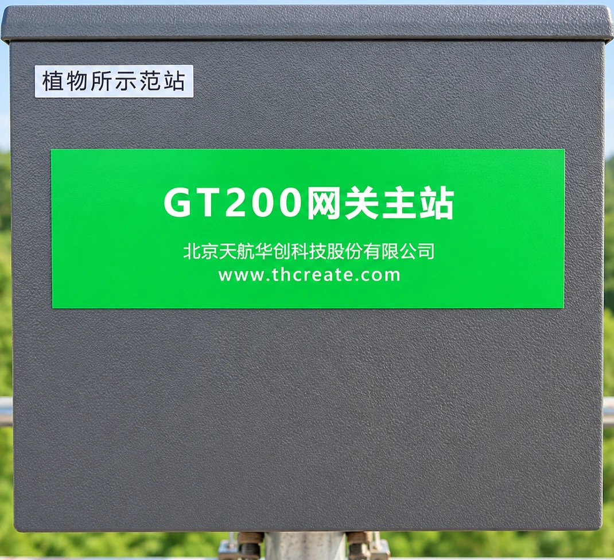

森林观测设备与实时数据传输
实拍仪器按远近景深穿插在点云森林中（部分受林木自然遮挡），缺失的树冠、立杆与三脚架由点云补全；无线 WiFi 与有线数据线汇入采集箱，实时传至电脑。
点云森林与补全结构
无线 WiFi 传输
有线数据线传输

GT200 网关主站
塔顶放大 · 无线数据先汇于此
bjf-station / live
LIVE
森林站 · 实时数据
30 min 同步
树干液流
径向生长